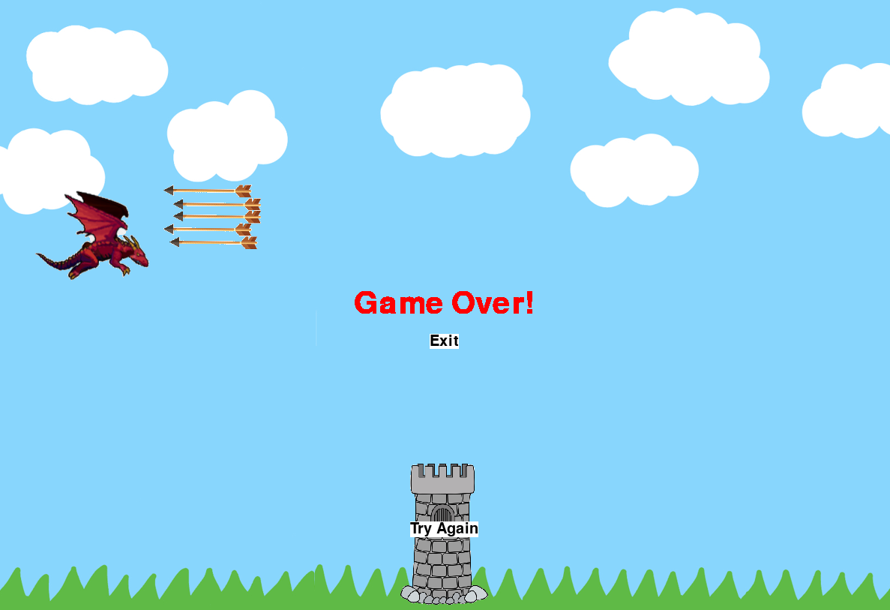
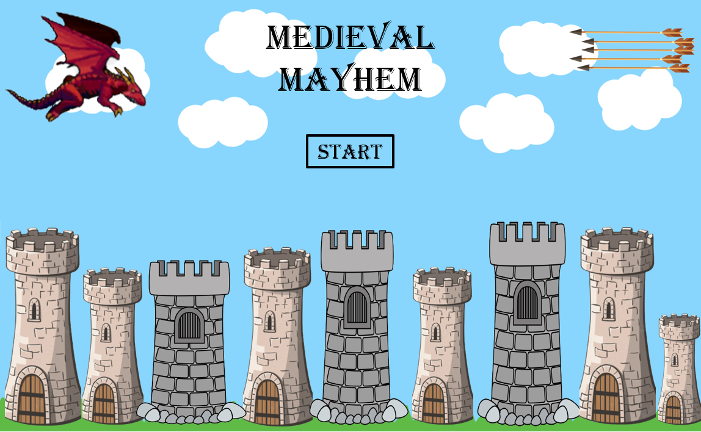
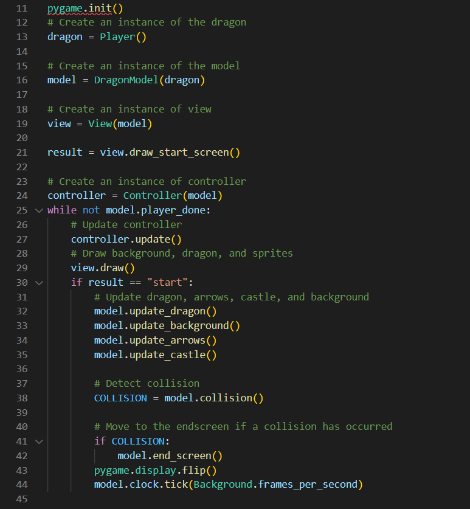

We’ve implemented collision detection in our game, so the player won’t be able to take on our challenge easily. The images have bounding boxes that have been mostly fitted to the objects, which provides the player with an easy way of avoiding obstacles.
Randomized obstacle speeds have been added so the player has more of a challenge. Arrows come flying out of nowhere and will really test the reaction speed of the player. Maneuverability is key, and we hope it provides a more challenging experience!
As an appealing final visual touch, the dragon switches between two image states whenever the player presses a movement key. The dragon looks like it is flying, soaring from the user’s imagination.
Our score feature constantly updates as the player moves through the state of the game. It's a great way to keep track of how your game is going.
We included ease-of-access buttons so it’s really simple to navigate through our game. Our start button on the start screen, exit and try again buttons on the end screen are intuitive, allowing you to exit.
 Our program is open source and available on GitHub. To run the game, install the pygame library and clone the github repository. The program can then be played using the play_game.py file (shown below). Have fun playing our game!
The program contains files that run Medieval Mayhem.